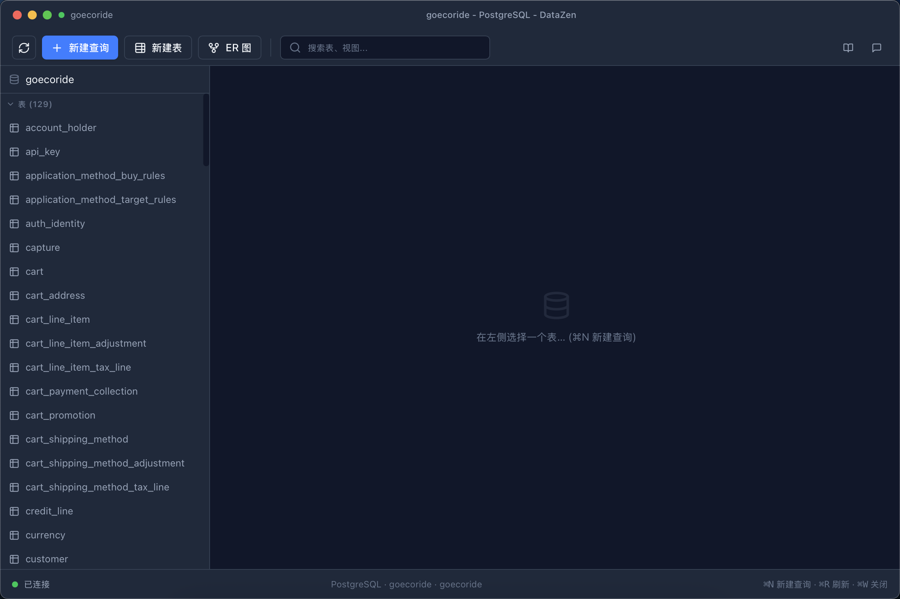
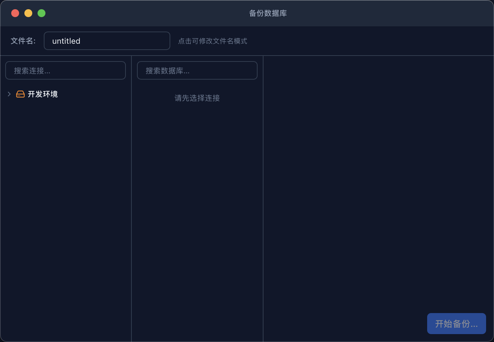
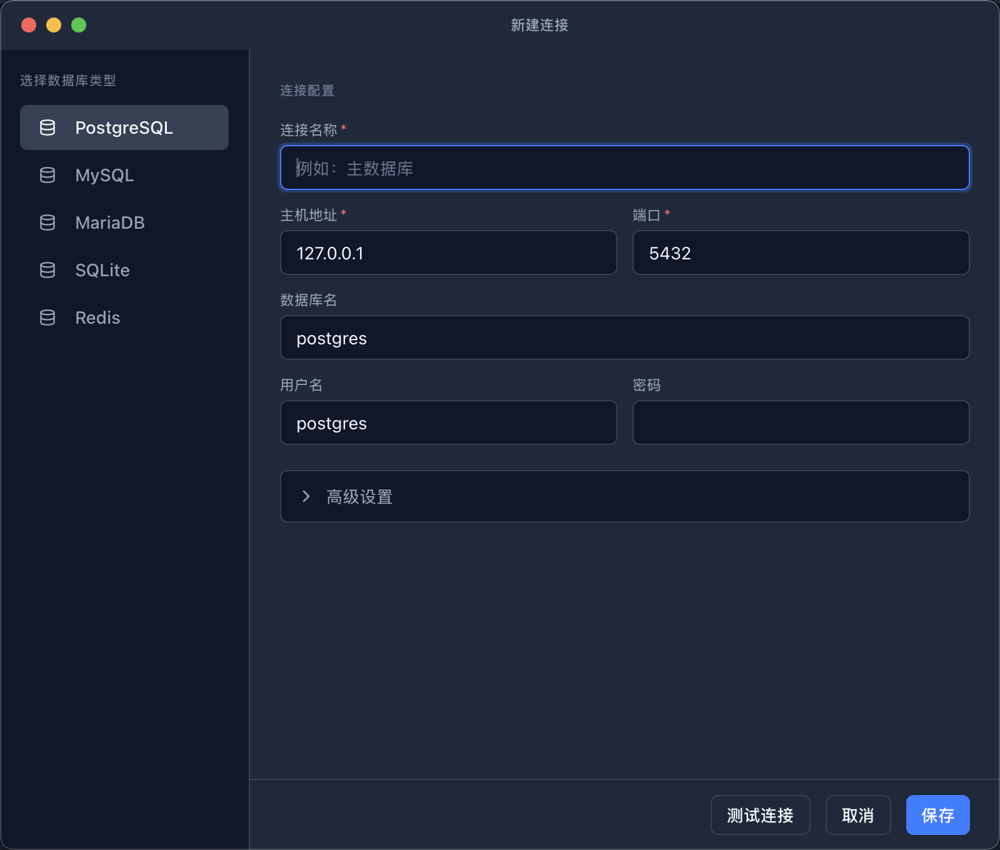

🤖
AI 助手
NL2SQL、诊断、EXPLAIN、Chat、智能筛选
📊
图表可视化
智能推荐、五种图表、PNG/SVG 导出
⚙️
Workflow
YAML 自动化、跨库编排、AI 生成
🔌
多数据库
PG / MySQL / SQLite / Redis / 插件
SQL 编辑器
为日常查询打磨
- 语法高亮 + 表名 / 列名自动补全（CodeMirror 6）
- 多语句执行、查询历史与收藏
- SQL 方言按连接类型自动切换
- 查询结果上限可配，大结果集不卡界面

数据浏览与编辑
十万行也不卡
- 虚拟滚动大表，10 万行级流畅滚动
- 行内编辑、安全批量删除、事务支持
- 排序、筛选、分页组合使用
- 导出 CSV / JSON / SQL，导入同源格式

备份与同步
数据在手，心里不慌
- 一键备份为 SQL 文件：Schema-only / Data-only / Gzip
- 完整应用数据打包导出（含配置），原子写入 + ZIP 炸弹防护
- PG ↔ MySQL 表结构对比与数据同步，支持断点续传
- 备份包自动排除密钥文件

安全与隐私
默认安全的设计
- 连接密码 AES-256-GCM 加密存储，主密钥入系统钥匙串
- SSH 凭据加密、Host Key TOFU 校验
- 路径 IPC 收紧，文件访问白名单
- SQL / 自然语言请求默认不落 info 日志
